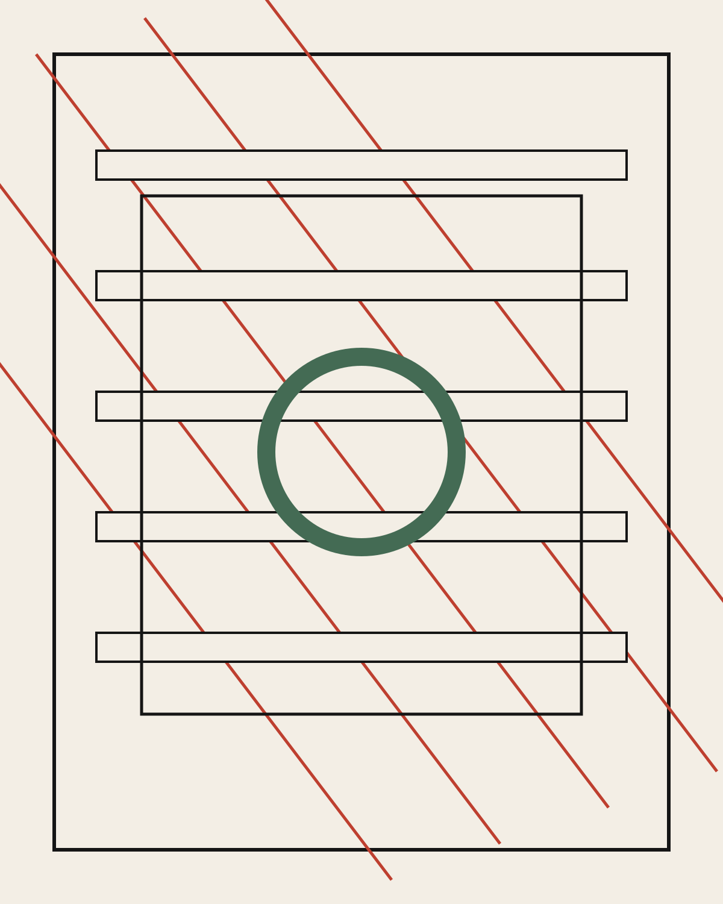
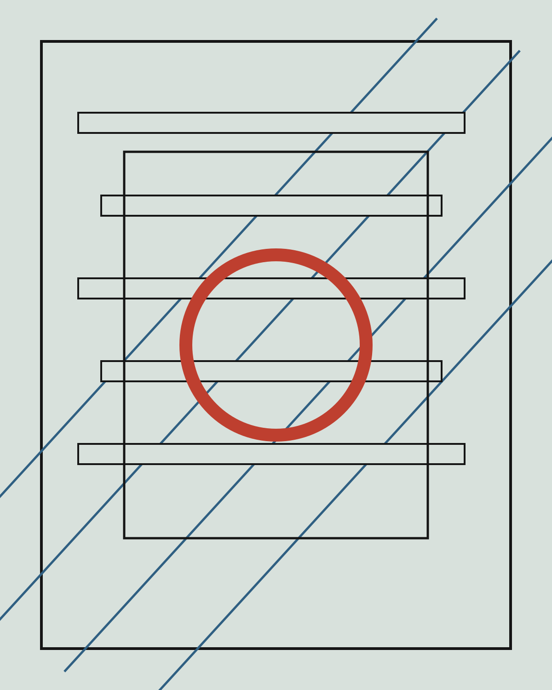
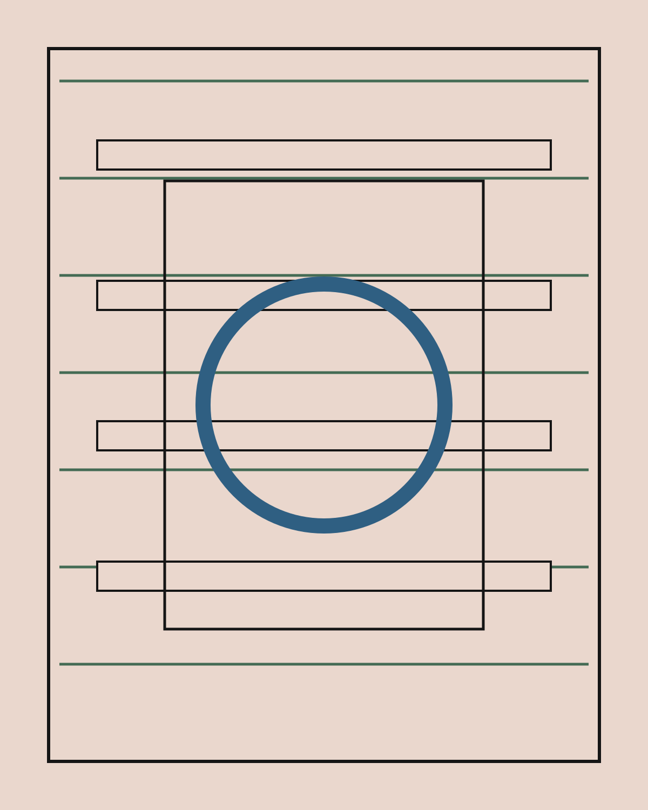
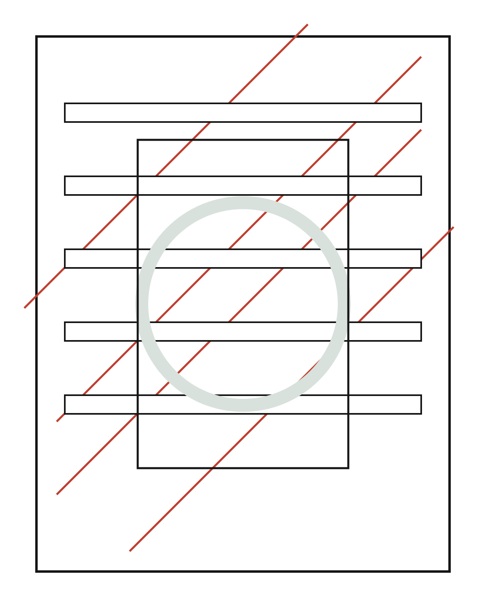

Project Index
Research, product thinking, and visual systems for complex ideas.
PORTFOLIO / PERSONAL SITE
Selected projects. Replace these with your real pieces when ready.

Research, product thinking, and visual systems for complex ideas.

A living notebook for experiments, process, and creative references.

A compact identity and web presence for a small independent practice.

Older work, prototypes, and stray ideas worth keeping in orbit.
Small side quests and visual exercises.
I am Eva Daniel. This site is a compact home for selected work, experiments, and useful ways to get in touch.
The structure is intentionally simple: a landing statement, a visual project rail, a play area, and direct links. Swap the placeholder project titles, descriptions, images, email, LinkedIn URL, and CV file to make it fully yours.